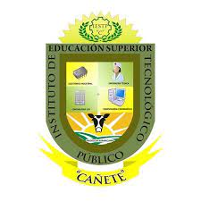

Experiencia Laboral
Compunet(Actualmente) Responsabilidades:
-Mantenimiento de la infraestructura de sistemas de la empresa
-Lleve qa cabo un analisis de riesgos el cual colabora a recuperar el 80% de la informacion perdida durante una crisis interna en 2022
-A cargo de la Instalacion y configuracion de HW y SW
Proyectos Realizados
-Proyecto1:"Creacion de una Pagina Web ing.Maria del Carmen Quilca Sanchez"
- Proyecto2:"Implementacion de I.A para la Asistencia Digital en el instituto de Educacion Superior Tecnologico de Cañete

Educacion
-5to ciclo de la Carrera de Arquitectura de Plataformas y Servicios de T.I en el Instituto de Educacion Superior Tecnologico Publico de Cañete Culminacion de estudios este año 2024
Contactame

+51 903274543

Candelaleonmilenecorali@gmail.com

Imperial-Cañete